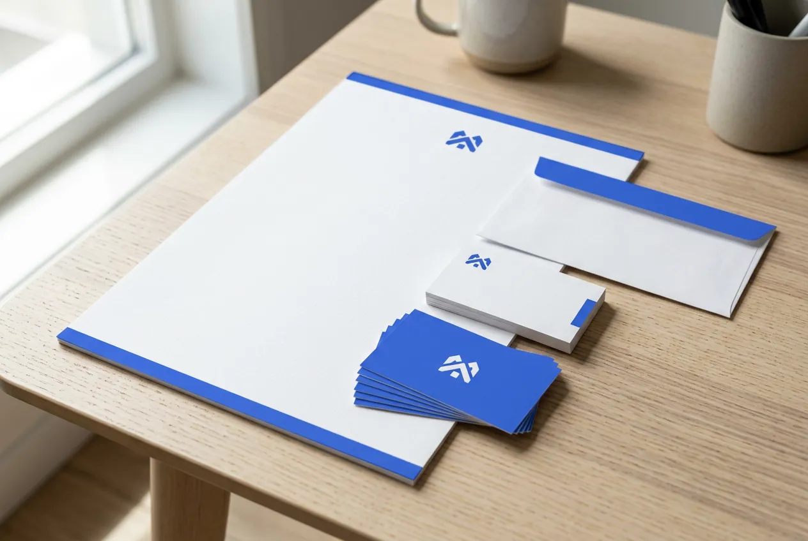
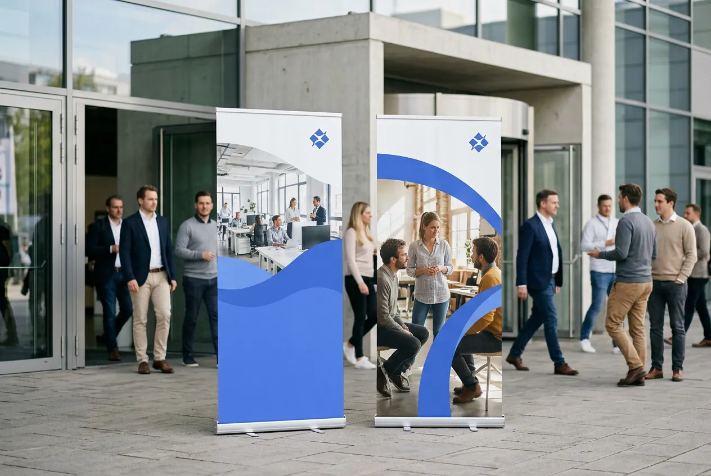
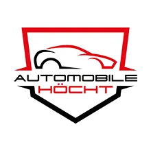
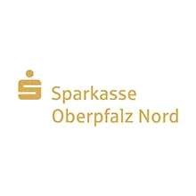
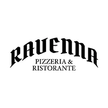

Marketing auslagern.
Website, Social Media, Print, Kampagnen –
alles mit einem Ansprechpartner.
Statt lange nach Personal zu suchen, übernehme ich das
extern: flexibel, sofort einsatzbereit und ohne Fixkosten.
Marketing, das läuft –
ohne eigene Abteilung.
Gutes Marketing braucht Kontinuität – aber nicht jedes Unternehmen braucht (oder findet) dafür eine eigene Stelle. Marketing-Fachkräfte sind teuer, schwer zu bekommen und für kleinere Teams oft überdimensioniert. Genau hier ist Marketing auslagern die clevere Alternative: Du bekommst die Leistung, ohne die Fixkosten und die lange Suche.
Marketing auslagern heißt dabei nicht Alles-oder-Nichts: Als deine externe Marketing-Lösung aus Weiden übernehme ich so viel oder so wenig, wie du brauchst – von einzelnen Projekten bis zur laufenden Betreuung. Ein Ansprechpartner für Website, Social Media, Print und Kampagnen, sofort einsatzbereit und ohne Einarbeitung.
Ob eine neue Website, laufende Social-Media-Betreuung oder eine einzelne Kampagne – du entscheidest, wo du Verstärkung brauchst. Ich sorge dafür, dass dein Auftritt läuft, während du dich um dein Kerngeschäft kümmerst.
Der ehrliche Vergleich
- Festes Gehalt – jeden Monat
- Urlaubs- und Krankheitstage
- Begrenzte Zeit und Kapazität
- Oft nur einzelne Fachbereiche
- Arbeitsplatz notwendig
- Hardware, Software, Lizenzen
- Einarbeitung erforderlich
- Weiterbildung notwendig
- Nur bei Bedarf bezahlen
- Planbare Zusammenarbeit
- Verfügbar nach Abstimmung
- Breites Spektrum + Netzwerk
- Kein zusätzlicher Arbeitsplatz
- Software, Hardware, Tools inkl.
- Sofort einsatzbereit
- Aktuelles Know-how vorhanden
Marketing auslagern –
komplett aus einer Hand.
Marke, Logo & Geschäftsausstattung
Logo, Geschäftsausstattung, Anzeigen und ein durchgängiges Erscheinungsbild – dein Unternehmen tritt überall einheitlich und professionell auf, statt als Flickenteppich.
Website & Landingpages
Von der neuen Website über einzelne Landingpages bis zur laufenden Pflege – inklusive Texten und sauberer SEO-Grundlagen. Damit du online gefunden wirst und einen aktuellen Auftritt hast.
Print, Werbetechnik & Großformat
Flyer, Broschüren, Roll-ups, Beschilderung und Werbetechnik – von der Gestaltung bis zur fertigen Produktion und Montage über meine Partner. Du bekommst das Ergebnis, nicht den Aufwand.
Social-Media-Betreuung
Redaktionsplan, Posts, Reels und die laufende Betreuung deiner Kanäle bei Instagram, Facebook, LinkedIn & Co. Dein Unternehmen bleibt präsent, ohne dass du selbst posten musst.
Kampagnen & Aktionen
Eine Idee, die über alle Kanäle funktioniert – von Print über Social bis Online-Werbung. Ich plane und setze Kampagnen um, die zusammenpassen, statt nebeneinander herzulaufen.
Recruiting & Arbeitgebermarke
Stellenanzeigen, Karriereseiten und eine Arbeitgebermarke, die zu dir passt. Damit du im Fachkräftemangel nicht nur Kunden findest, sondern auch die richtigen Mitarbeiter.
Foto- & Content-Produktion
Echte Bilder von deinem Team, deinen Produkten und deinem Unternehmen – statt Stockfotos. Content, der dein Unternehmen zeigt, wie es wirklich ist, und Website und Social Media füllt.
Beratung & Marketing-Struktur
Manchmal fehlt nicht die Umsetzung, sondern der Plan. Ich bringe Struktur in dein Marketing und bin der Ansprechpartner übers Jahr, der ehrlich sagt, was Sinn macht – und was nicht.
So sieht ausgelagertes Marketing aus.


Einfach, direkt und ohne Chaos.
Kein Angebots-Marathon, kein Fachchinesisch.
Du sagst mir, wo's hakt – ich kümmere mich um den Rest.
Kennenlernen
Du erzählst mir kurz, wo dein Unternehmen steht und wo Marketing liegen bleibt – per Telefon, WhatsApp oder Kontaktformular. Unverbindlich und ohne Verkaufsgespräch.
Vorschlag
Ich schaue mir deinen Auftritt an und sage ehrlich, wo Auslagern Sinn macht – von einzelnen Aufgaben bis zur kompletten Betreuung. Klare Einschätzung, keine Standardlösung.
Umsetzung
Ich übernehme Gestaltung, Abstimmung mit Druckerei und Partnern und die komplette Koordination. Du bekommst das fertige Ergebnis – nicht den Stress dazwischen.
Dranbleiben
Auf Wunsch bleibe ich dein fester Marketing-Ansprechpartner übers Jahr – für Website, Social Media, Aktionen und alles, was neu dazukommt. Dein Marketing läuft, ohne Leerlauf.
Deine externe Marketing-Lösung
in Weiden & der Oberpfalz.
Ob Handwerk, Handel, Dienstleistung oder Industrie – wer sein Marketing auslagern will, bekommt bei mir alles aus einer Hand. Als externe Marketing-Lösung übernehme ich das Marketing für Unternehmen, die keine eigene Abteilung haben oder ihr Team entlasten wollen. Von Website über Social Media und Print bis zu Kampagnen bekommst du alles aus einer Hand. Ein Ansprechpartner, der versteht, wie ein Unternehmen tickt.
Ich sitze in Irchenrieth bei Weiden in der Oberpfalz und arbeite für Unternehmen in der ganzen Region – von Weiden über Neustadt und Tirschenreuth bis Amberg. Vieles läuft unkompliziert digital, auf Wunsch komme ich auch zu dir ins Unternehmen.
Wie das in der Praxis aussieht, siehst du bei meinen Referenzen. Und egal, ob du bei null anfängst oder deinen bestehenden Auftritt nur auffrischen willst – wir finden den Weg, der zu deinem Unternehmen und deinem Budget passt.
Was meine Kunden sagen.
Dennis überzeugt mit Kompetenz, Fachwissen und professioneller Arbeitsweise. Wir sind sehr zufrieden und empfehlen ihn uneingeschränkt weiter.
Markus Höcht, Automobile Höcht

Seit wir uns 2016 selbstständig gemacht haben, ist DESIGNJ unser Ansprechpartner rund um Marketing, Flyer und Banner. Von Anfang an ein sehr netter, vertrauensvoller und ehrlicher Partner!
Manuel Johnson, Autoservice Johnson
Mit Dennis Jähring zusammenzuarbeiten macht einfach Spaß: kreativ, schnell und auf den Punkt. Er versteht sofort, worum es geht, und liefert Lösungen, die überraschen und begeistern.
Private Banking, Sparkasse Oberpfalz Nord

Über 10 Jahre unser bester Partner, wenn es rund ums Thema „Werbung, Kreativität und Design“ geht. Man bekommt das Rundum-Sorglos-Paket zu einem absolut fairen Preis. Auch sehr spontane Aufträge und Wünsche sind problemlos möglich.
Martin Sautter, Restaurant Ravenna

Marketing auslagern –
kurz & ehrlich erklärt.
Lohnt sich Marketing auslagern gegenüber einem festen Mitarbeiter?
Für viele kleinere und mittlere Unternehmen ja. Eine feste Marketing-Fachkraft ist teuer, schwer zu finden und oft nicht ausgelastet. Ausgelagert bekommst du dieselbe Leistung flexibel – nur dann, wenn du sie brauchst, ohne Fixkosten und lange Personalsuche.
Übernimmst du mein komplettes Marketing oder nur einzelne Aufgaben?
Beides. Du entscheidest, wie viel du abgibst – von einzelnen Projekten (Website, Kampagne, Flyer) bis zur laufenden, kompletten Betreuung über das Jahr. So viel oder so wenig, wie zu dir passt.
Wie schnell kannst du loslegen?
In der Regel sofort. Ich bin sofort einsatzbereit, ohne Einarbeitungszeit oder Recruiting-Prozess. Nach einem kurzen Gespräch kann es direkt losgehen.
Ich habe schon eine Website und Material – kannst du darauf aufbauen?
Klar. Oft muss nichts komplett neu, sondern nur fortgeführt und aufgefrischt werden. Ich baue auf deinem bestehenden Auftritt auf und bringe ihn behutsam auf ein aktuelles, einheitliches Niveau.
Bin ich an einen langen Vertrag gebunden?
Nein. Es gibt kein starres Vertragskorsett – wir arbeiten so zusammen, wie es für dich Sinn macht: projektweise oder laufend. Flexibel statt fest ist der ganze Punkt.
Arbeitest du auch für kleinere Unternehmen in der Oberpfalz?
Ja. Gerade kleinere Unternehmen ohne eigene Marketing-Abteilung profitieren am meisten. Ich sitze in Weiden bzw. Irchenrieth und bin für die ganze Oberpfalz da, vor Ort oder digital.
Keine Verpflichtung.
Keine Standardlösung.
Wir schauen gemeinsam, welche Aufgaben du am besten auslagerst.
So erreichst du mich direkt:
 Route planen →
Route planen →